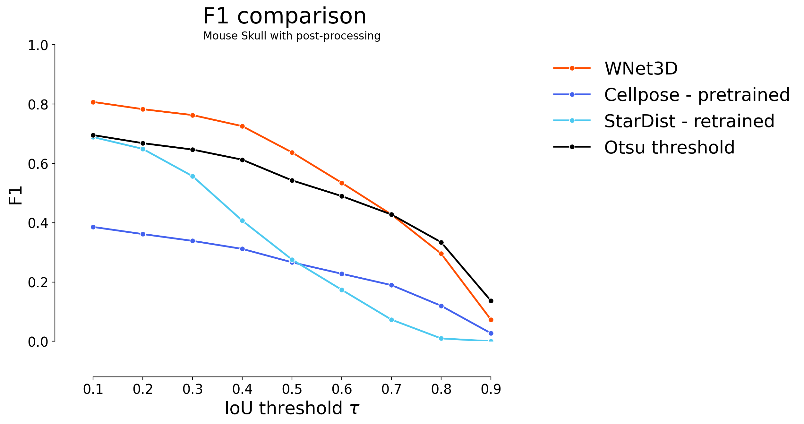

Showing quantitative benchmarking performance on additional datasets#
Show that self-supervised model can perform well on additional datasets, without requiring any additional training.
import numpy as np
from tifffile import imread, imwrite
import sys
import numpy as np
import pyclesperanto_prototype as cle
from stardist.matching import matching_dataset
sys.path.append("../..")
from utils import *
from plots import *
print("Used GPU: ", cle.get_device())
show_params()
#################
SAVE_PLOTS_AS_PNG = False
SAVE_PLOTS_AS_SVG = True
Used GPU: <NVIDIA GeForce RTX 4070 Ti on Platform: NVIDIA CUDA (1 refs)>
Plot parameters (set in plots.py) :
- COLORMAP : ████████
- DPI : 200
- Data path : C:\Users\Cyril\Desktop\Code\CELLSEG_BENCHMARK
- Font size : 20
- Title font size : 25.0
- Label font size : 20.0
%load_ext autoreload
%autoreload 2
Data#
data_path = DATA_PATH / "RESULTS/WNET OTHERS/"
# list all folders in the data path
folders = [x for x in data_path.iterdir() if x.is_dir()]
folders
[WindowsPath('C:/Users/Cyril/Desktop/Code/CELLSEG_BENCHMARK/RESULTS/WNET OTHERS/Mouse-Skull-Nuclei-CBG'),
WindowsPath('C:/Users/Cyril/Desktop/Code/CELLSEG_BENCHMARK/RESULTS/WNET OTHERS/Platynereis-ISH-Nuclei-CBG'),
WindowsPath('C:/Users/Cyril/Desktop/Code/CELLSEG_BENCHMARK/RESULTS/WNET OTHERS/Platynereis-Nuclei-CBG'),
WindowsPath('C:/Users/Cyril/Desktop/Code/CELLSEG_BENCHMARK/RESULTS/WNET OTHERS/processed_instance_labels'),
WindowsPath('C:/Users/Cyril/Desktop/Code/CELLSEG_BENCHMARK/RESULTS/WNET OTHERS/processed_instance_labels_retrain'),
WindowsPath('C:/Users/Cyril/Desktop/Code/CELLSEG_BENCHMARK/RESULTS/WNET OTHERS/processed_threshold_only_instance_labels'),
WindowsPath('C:/Users/Cyril/Desktop/Code/CELLSEG_BENCHMARK/RESULTS/WNET OTHERS/Retrained WNet'),
WindowsPath('C:/Users/Cyril/Desktop/Code/CELLSEG_BENCHMARK/RESULTS/WNET OTHERS/Seb cFOS')]
def get_predictions(path):
return [imread(f) for f in path.glob("*.tif")]
#################
gt_folder = "labels"
mouse_skull_gt = get_predictions(folders[0] / gt_folder)[0]
platynereis_ISH_gt = get_predictions(folders[1] / gt_folder)[0]
platynereis_gt = get_predictions(folders[2] / gt_folder)[0]
prediction_folder = "pred"
mouse_skull_pred = get_predictions(folders[0] / prediction_folder)[0]
platynereis_ISH_pred = get_predictions(folders[1] / prediction_folder)[0]
platynereis_pred = get_predictions(folders[2] / prediction_folder)[0]
# get second channel of predictions
mouse_skull_pred = mouse_skull_pred[1]
platynereis_ISH_pred = platynereis_ISH_pred[1]
platynereis_pred = platynereis_pred[1]
def find_files(path):
files = path.glob("*.tif")
pretrained = []
for f in files:
if f.name.startswith("pretrained"):
pretrained.append(f)
return pretrained[0]
cellpose_folder = "cellpose"
cp_pretrained_mouse_skull = find_files(folders[0] / cellpose_folder)
cp_pretrained_platynereis_ISH = find_files(folders[1] / cellpose_folder)
cp_pretrained_platynereis = find_files(folders[2] / cellpose_folder)
cp_pretrained_mouse_skull = imread(cp_pretrained_mouse_skull)
cp_pretrained_platynereis_ISH = imread(cp_pretrained_platynereis_ISH)
cp_pretrained_platynereis = imread(cp_pretrained_platynereis)
stardist_folder = "stardist"
sd_retrained_mouse_skull = get_predictions(folders[0] / stardist_folder)[0]
sd_retrained_platynereis_ISH = get_predictions(folders[1] / stardist_folder)[0]
sd_retrained_platynereis = get_predictions(folders[2] / stardist_folder)[0]
# get validation set to estimate thresholds
mouse_skull_val = imread(folders[0] / "TEST/X2_left_WNet3D_pred_1.tif")[1] # take channel 1 of WNet prediction (0 is background)
mouse_skull_val_gt = imread(folders[0] / "TEST/Y2_left.tif")
###
platynereis_ISH_val = imread(folders[1] / "TEST/downsampled_cropped_X02_train_WNet3D_pred.tif")[1]
platynereis_ISH_val_gt = imread(folders[1] / "TEST/downsampled_cropped_Y02_train.tif")
###
platynereis_val = imread(folders[2] / "TEST/downsampled_cropped_dataset_hdf5_150_0_WNet3D_pred_1.tif")[1]
platynereis_val_gt = imread(folders[2] / "TEST/downsampled_cropped_mask_dataset_hdf5_150_0.tif")
Computations#
Threshold predictions#
GT_labels_val = [mouse_skull_val_gt, platynereis_ISH_val_gt, platynereis_val_gt]
predictions_val = [mouse_skull_val, platynereis_ISH_val, platynereis_val]
thresh = np.arange(0, 1, 0.05)
rows = []
for t in thresh:
for i, (gt, pred) in enumerate(zip(GT_labels_val, predictions_val)):
dices_row = {"Threshold": t, "Fold": i, "Dice": dice_coeff(
np.where(gt > 0, 1, 0),
np.where(pred > t, 1, 0)
)}
rows.append(dices_row)
dices_df = pd.DataFrame(rows)
sns.lineplot(data=dices_df, x="Threshold", y="Dice", hue="Fold", palette="tab10")
plt.title("Dice metric for different thresholds for WNet3D and GT")
plt.vlines([0.45, 0.55], 0, 1, colors="red", linestyles="dashed")
plt.show()
dices_df.groupby("Threshold").mean().sort_values("Dice", ascending=False).head(5)
| Fold | Dice | |
|---|---|---|
| Threshold | ||
| 0.50 | 1.0 | 0.717895 |
| 0.55 | 1.0 | 0.708049 |
| 0.45 | 1.0 | 0.631312 |
| 0.60 | 1.0 | 0.603701 |
| 0.65 | 1.0 | 0.455269 |
predictions = [mouse_skull_pred, platynereis_ISH_pred, platynereis_pred]
GT_labels = [mouse_skull_gt, platynereis_ISH_gt, platynereis_gt]
predictions_thresholded = []
thresholds = [0.45, 0.55, 0.55]
for i, pred in enumerate(predictions):
predictions_thresholded.append(np.where(pred > thresholds[i], 1, 0))
mouse_skull_instance = np.array(
cle.voronoi_otsu_labeling(predictions_thresholded[0], outline_sigma=1, spot_sigma=15)
)
platynereis_ISH_instance = np.array(
cle.voronoi_otsu_labeling(predictions_thresholded[1], outline_sigma=0.5, spot_sigma=2)
)
platynereis_instance = np.array(
cle.voronoi_otsu_labeling(predictions_thresholded[2], outline_sigma=0.5, spot_sigma=2.75)
)
Additional mouse skull postprocessing#
def remap_image(image, new_min=1, new_max=100):
min_val = image.min()
max_val = image.max()
return (image - min_val) / (max_val - min_val) * (new_max - new_min) + new_min
def mouse_skull_postproc(instance_labels, pred):
instance_labels = cle.closing_labels(instance_labels, radius=8)
remap_pred = remap_image(pred)
instance_labels = cle.merge_labels_with_border_intensity_within_range(
image=remap_pred,
labels=instance_labels.astype(np.int32),
minimum_intensity=35,
maximum_intensity=100
)
return np.array(instance_labels)
mouse_skull_image = imread(
str(Path("c:/Users/Cyril/Desktop/Code/CELLSEG_BENCHMARK/RESULTS/WNET OTHERS/Mouse-Skull-Nuclei-CBG/X1.tif"))
)
mouse_skull_instance_postproc = mouse_skull_postproc(
mouse_skull_instance,
mouse_skull_pred
)
_generate_touch_mean_intensity_matrix.py (30): generate_touch_mean_intensity_matrix is supposed to work with images of integer type only.
Loss of information is possible when passing non-integer images.
_opencl_execute.py (281): overflow encountered in cast
# apply post-processing to cellpose and stardist predictions (keep w/o post-processing for comparison)
cp_pretrained_mouse_skull_postproc = mouse_skull_postproc(cp_pretrained_mouse_skull, mouse_skull_pred)
sd_retrained_mouse_skull_postproc = mouse_skull_postproc(sd_retrained_mouse_skull, mouse_skull_pred)
# import napari
# viewer = napari.Viewer()
# viewer.add_image(predictions_thresholded[0], colormap="turbo")
# viewer.add_labels(mouse_skull_instance)
# viewer.add_labels(mouse_skull_instance, name="mouse_skull_instance_closed")
# viewer.add_image(mouse_skull_remap, name="mouse_skull_pred_remap", colormap="turbo")
# viewer.add_labels(mouse_skull_instance, name="mouse_skull_instance_closed_merged")
# Show the predictions and the instance segmentation
# import napari
# viewer = napari.Viewer()
# viewer.add_image(predictions_thresholded[0], name="mouse_skull_pred", colormap="turbo")
# viewer.add_labels(mouse_skull_instance, name="mouse_skull_instance")
# viewer.add_image(predictions_thresholded[1], name="platynereis_ISH_pred", colormap="turbo")
# viewer.add_labels(platynereis_ISH_instance, name="platynereis_ISH_instance")
# viewer.add_image(predictions_thresholded[2], name="platynereis_pred", colormap="turbo")
# viewer.add_labels(platynereis_instance, name="platynereis_instance")
Plots#
predictions = [
mouse_skull_instance_postproc,
mouse_skull_instance,
platynereis_ISH_instance,
platynereis_instance,
]
GT_labels = [
mouse_skull_gt,
mouse_skull_gt,
platynereis_ISH_gt,
platynereis_gt,
]
names = [
"Mouse skull w/ post-processing",
"Mouse skull w/o post-processing",
"Platynereis ISH",
"Platynereis",
]
# save instance labels
for pred, name in zip(predictions, names):
save_path = data_path / "processed_instance_labels"
save_path.mkdir(exist_ok=True)
name = name.replace("/", "_")
name = name.replace(" ", "_")
imwrite(save_path / f"{name}.tif", pred.astype(np.uint32))
taus = [0.1, 0.2, 0.3, 0.4, 0.5, 0.6, 0.7, 0.8, 0.9]
model_stats = []
names_stats = []
for i, p in enumerate(predictions):
print(f"Validating on {names[i]}")
stats = [matching_dataset(
GT_labels[i],
p,
thresh=t,
show_progress=False
) for t in taus]
model_stats.append(stats)
for t in taus:
names_stats.append(names[i])
# uncomment for ALL plots :
plot_performance(taus, stats, name=names[i])
print("*"*20)
Validating on Mouse skull w/ post-processing
********************
Validating on Mouse skull w/o post-processing
********************
Validating on Platynereis ISH
********************
Validating on Platynereis
********************
dfs = [dataset_matching_stats_to_df(s) for s in model_stats]
df_wnet = pd.concat(dfs)
df_wnet["Dataset"] = names_stats
df_wnet["Model"] = "WNet3D"
df_wnet
| criterion | fp | tp | fn | precision | recall | accuracy | f1 | n_true | n_pred | mean_true_score | mean_matched_score | panoptic_quality | by_image | Dataset | Model | |
|---|---|---|---|---|---|---|---|---|---|---|---|---|---|---|---|---|
| thresh | ||||||||||||||||
| 0.1 | iou | 1096 | 4061 | 845 | 0.787473 | 0.827762 | 0.676608 | 0.807115 | 4906 | 5157 | 0.558399 | 0.674588 | 0.544470 | False | Mouse skull w/ post-processing | WNet3D |
| 0.2 | iou | 1219 | 3938 | 968 | 0.763622 | 0.802691 | 0.642939 | 0.782669 | 4906 | 5157 | 0.555335 | 0.691842 | 0.541483 | False | Mouse skull w/ post-processing | WNet3D |
| 0.3 | iou | 1319 | 3838 | 1068 | 0.744231 | 0.782307 | 0.616546 | 0.762794 | 4906 | 5157 | 0.550126 | 0.703209 | 0.536404 | False | Mouse skull w/ post-processing | WNet3D |
| 0.4 | iou | 1507 | 3650 | 1256 | 0.707776 | 0.743987 | 0.569156 | 0.725430 | 4906 | 5157 | 0.536541 | 0.721169 | 0.523158 | False | Mouse skull w/ post-processing | WNet3D |
| 0.5 | iou | 1952 | 3205 | 1701 | 0.621485 | 0.653282 | 0.467337 | 0.636987 | 4906 | 5157 | 0.495302 | 0.758175 | 0.482948 | False | Mouse skull w/ post-processing | WNet3D |
| 0.6 | iou | 2468 | 2689 | 2217 | 0.521427 | 0.548104 | 0.364660 | 0.534433 | 4906 | 5157 | 0.437325 | 0.797887 | 0.426417 | False | Mouse skull w/ post-processing | WNet3D |
| 0.7 | iou | 3006 | 2151 | 2755 | 0.417103 | 0.438443 | 0.271866 | 0.427507 | 4906 | 5157 | 0.365661 | 0.834001 | 0.356541 | False | Mouse skull w/ post-processing | WNet3D |
| 0.8 | iou | 3670 | 1487 | 3419 | 0.288346 | 0.303098 | 0.173391 | 0.295538 | 4906 | 5157 | 0.263805 | 0.870361 | 0.257225 | False | Mouse skull w/ post-processing | WNet3D |
| 0.9 | iou | 4789 | 368 | 4538 | 0.071359 | 0.075010 | 0.037958 | 0.073139 | 4906 | 5157 | 0.069084 | 0.920993 | 0.067361 | False | Mouse skull w/ post-processing | WNet3D |
| 0.1 | iou | 1718 | 4116 | 790 | 0.705519 | 0.838973 | 0.621377 | 0.766480 | 4906 | 5834 | 0.479463 | 0.571488 | 0.438034 | False | Mouse skull w/o post-processing | WNet3D |
| 0.2 | iou | 1903 | 3931 | 975 | 0.673809 | 0.801264 | 0.577324 | 0.732030 | 4906 | 5834 | 0.474820 | 0.592590 | 0.433793 | False | Mouse skull w/o post-processing | WNet3D |
| 0.3 | iou | 2244 | 3590 | 1316 | 0.615358 | 0.731757 | 0.502098 | 0.668529 | 4906 | 5834 | 0.457198 | 0.624794 | 0.417693 | False | Mouse skull w/o post-processing | WNet3D |
| 0.4 | iou | 2761 | 3073 | 1833 | 0.526740 | 0.626376 | 0.400809 | 0.572253 | 4906 | 5834 | 0.419895 | 0.670357 | 0.383614 | False | Mouse skull w/o post-processing | WNet3D |
| 0.5 | iou | 3389 | 2445 | 2461 | 0.419095 | 0.498369 | 0.294756 | 0.455307 | 4906 | 5834 | 0.362430 | 0.727233 | 0.331114 | False | Mouse skull w/o post-processing | WNet3D |
| 0.6 | iou | 3925 | 1909 | 2997 | 0.327220 | 0.389115 | 0.216170 | 0.355493 | 4906 | 5834 | 0.302478 | 0.777348 | 0.276342 | False | Mouse skull w/o post-processing | WNet3D |
| 0.7 | iou | 4471 | 1363 | 3543 | 0.233630 | 0.277823 | 0.145356 | 0.253818 | 4906 | 5834 | 0.230154 | 0.828420 | 0.210268 | False | Mouse skull w/o post-processing | WNet3D |
| 0.8 | iou | 4895 | 939 | 3967 | 0.160953 | 0.191398 | 0.095807 | 0.174860 | 4906 | 5834 | 0.165426 | 0.864303 | 0.151132 | False | Mouse skull w/o post-processing | WNet3D |
| 0.9 | iou | 5657 | 177 | 4729 | 0.030339 | 0.036078 | 0.016757 | 0.032961 | 4906 | 5834 | 0.033077 | 0.916812 | 0.030219 | False | Mouse skull w/o post-processing | WNet3D |
| 0.1 | iou | 532 | 2484 | 168 | 0.823607 | 0.936652 | 0.780151 | 0.876500 | 2652 | 3016 | 0.630515 | 0.673159 | 0.590023 | False | Platynereis ISH | WNet3D |
| 0.2 | iou | 590 | 2426 | 226 | 0.804377 | 0.914781 | 0.748304 | 0.856034 | 2652 | 3016 | 0.627286 | 0.685722 | 0.587002 | False | Platynereis ISH | WNet3D |
| 0.3 | iou | 652 | 2364 | 288 | 0.783820 | 0.891403 | 0.715496 | 0.834157 | 2652 | 3016 | 0.621627 | 0.697358 | 0.581706 | False | Platynereis ISH | WNet3D |
| 0.4 | iou | 776 | 2240 | 412 | 0.742706 | 0.844646 | 0.653442 | 0.790402 | 2652 | 3016 | 0.605176 | 0.716485 | 0.566312 | False | Platynereis ISH | WNet3D |
| 0.5 | iou | 949 | 2067 | 585 | 0.685345 | 0.779412 | 0.574007 | 0.729358 | 2652 | 3016 | 0.575968 | 0.738978 | 0.538980 | False | Platynereis ISH | WNet3D |
| 0.6 | iou | 1226 | 1790 | 862 | 0.593501 | 0.674962 | 0.461578 | 0.631616 | 2652 | 3016 | 0.518761 | 0.768578 | 0.485446 | False | Platynereis ISH | WNet3D |
| 0.7 | iou | 1622 | 1394 | 1258 | 0.462202 | 0.525641 | 0.326158 | 0.491884 | 2652 | 3016 | 0.421467 | 0.801816 | 0.394401 | False | Platynereis ISH | WNet3D |
| 0.8 | iou | 2311 | 705 | 1947 | 0.233753 | 0.265837 | 0.142051 | 0.248765 | 2652 | 3016 | 0.226469 | 0.851910 | 0.211925 | False | Platynereis ISH | WNet3D |
| 0.9 | iou | 2920 | 96 | 2556 | 0.031830 | 0.036199 | 0.017229 | 0.033874 | 2652 | 3016 | 0.033264 | 0.918915 | 0.031128 | False | Platynereis ISH | WNet3D |
| 0.1 | iou | 58 | 800 | 252 | 0.932401 | 0.760456 | 0.720721 | 0.837696 | 1052 | 858 | 0.525770 | 0.691387 | 0.579173 | False | Platynereis | WNet3D |
| 0.2 | iou | 86 | 772 | 280 | 0.899767 | 0.733840 | 0.678383 | 0.808377 | 1052 | 858 | 0.521990 | 0.711313 | 0.575009 | False | Platynereis | WNet3D |
| 0.3 | iou | 115 | 743 | 309 | 0.865967 | 0.706274 | 0.636675 | 0.778010 | 1052 | 858 | 0.514955 | 0.729115 | 0.567259 | False | Platynereis | WNet3D |
| 0.4 | iou | 152 | 706 | 346 | 0.822844 | 0.671103 | 0.586379 | 0.739267 | 1052 | 858 | 0.502527 | 0.748808 | 0.553569 | False | Platynereis | WNet3D |
| 0.5 | iou | 194 | 664 | 388 | 0.773893 | 0.631179 | 0.532905 | 0.695288 | 1052 | 858 | 0.484465 | 0.767556 | 0.533672 | False | Platynereis | WNet3D |
| 0.6 | iou | 269 | 589 | 463 | 0.686480 | 0.559886 | 0.445874 | 0.616754 | 1052 | 858 | 0.445128 | 0.795033 | 0.490340 | False | Platynereis | WNet3D |
| 0.7 | iou | 369 | 489 | 563 | 0.569930 | 0.464829 | 0.344124 | 0.512042 | 1052 | 858 | 0.383217 | 0.824425 | 0.422140 | False | Platynereis | WNet3D |
| 0.8 | iou | 535 | 323 | 729 | 0.376457 | 0.307034 | 0.203529 | 0.338220 | 1052 | 858 | 0.264275 | 0.860736 | 0.291118 | False | Platynereis | WNet3D |
| 0.9 | iou | 802 | 56 | 996 | 0.065268 | 0.053232 | 0.030205 | 0.058639 | 1052 | 858 | 0.048994 | 0.920388 | 0.053970 | False | Platynereis | WNet3D |
plot_stat_comparison(taus=taus, stats_list=model_stats, model_names=names, metric="IoU", plt_size=(9, 6))
if SAVE_PLOTS_AS_PNG:
plt.savefig("f1_comparison.png")
if SAVE_PLOTS_AS_SVG:
plt.savefig("f1_comparison.svg", bbox_inches='tight')
Comparisons on additional datasets#
# check performance for cellpose and stardist
model_stats_others = []
names_stats_others = []
predictions_others = [
cp_pretrained_mouse_skull_postproc,
cp_pretrained_mouse_skull,
sd_retrained_mouse_skull_postproc,
sd_retrained_mouse_skull,
cp_pretrained_platynereis_ISH,
sd_retrained_platynereis_ISH,
cp_pretrained_platynereis,
sd_retrained_platynereis,
]
GT_labels_others = [
mouse_skull_gt,
mouse_skull_gt,
mouse_skull_gt,
mouse_skull_gt,
platynereis_ISH_gt,
platynereis_ISH_gt,
platynereis_gt,
platynereis_gt,
]
names_others = [
"CellPose - pretrained w/ post-processing",
"CellPose - pretrained",
"StarDist - retrained w/ post-processing",
"StarDist - retrained",
"CellPose - pretrained",
"StarDist - retrained",
"CellPose - pretrained",
"StarDist - retrained",
]
taus = [0.1, 0.2, 0.3, 0.4, 0.5, 0.6, 0.7, 0.8, 0.9]
for i, p in enumerate(predictions_others):
print(f"Validating on {names_others[i]}")
stats = [matching_dataset(
GT_labels_others[i],
p,
thresh=t,
show_progress=False
) for t in taus]
model_stats_others.append(stats)
for t in taus:
names_stats_others.append(names_others[i])
# uncomment for ALL plots :
plot_performance(taus, stats, name=names_others[i])
print("*"*20)
Validating on CellPose - pretrained w/ post-processing
********************
Validating on CellPose - pretrained
********************
Validating on StarDist - retrained w/ post-processing
********************
Validating on StarDist - retrained
********************
Validating on CellPose - pretrained
********************
Validating on StarDist - retrained
********************
Validating on CellPose - pretrained
********************
Validating on StarDist - retrained
********************
# plot full comparison of stats
dfs = [dataset_matching_stats_to_df(s) for s in model_stats_others]
df_others = pd.concat(dfs)
df_others["Dataset"] = ["Mouse skull"] * len(taus) * 4 + ["Platynereis ISH"] * len(taus) * 2 + ["Platynereis"] * len(taus) * 2
def get_name(name):
res = "CellPose" if "CellPose" in name else "StarDist"
res += "- post-processing" if "post-processing" in name else ""
return res
df_others["Model"] = [get_name(n) for n in names_stats_others]
df_others
| criterion | fp | tp | fn | precision | recall | accuracy | f1 | n_true | n_pred | mean_true_score | mean_matched_score | panoptic_quality | by_image | Dataset | Model | |
|---|---|---|---|---|---|---|---|---|---|---|---|---|---|---|---|---|
| thresh | ||||||||||||||||
| 0.1 | iou | 13028 | 4283 | 623 | 0.247415 | 0.873013 | 0.238820 | 0.385561 | 4906 | 17311 | 0.547819 | 0.627504 | 0.241941 | False | Mouse skull | CellPose- post-processing |
| 0.2 | iou | 13295 | 4016 | 890 | 0.231991 | 0.818589 | 0.220647 | 0.361525 | 4906 | 17311 | 0.539571 | 0.659147 | 0.238298 | False | Mouse skull | CellPose- post-processing |
| 0.3 | iou | 13549 | 3762 | 1144 | 0.217318 | 0.766816 | 0.203847 | 0.338660 | 4906 | 17311 | 0.526620 | 0.686762 | 0.232578 | False | Mouse skull | CellPose- post-processing |
| 0.4 | iou | 13850 | 3461 | 1445 | 0.199931 | 0.705463 | 0.184528 | 0.311563 | 4906 | 17311 | 0.504832 | 0.715604 | 0.222956 | False | Mouse skull | CellPose- post-processing |
| 0.5 | iou | 14352 | 2959 | 1947 | 0.170932 | 0.603139 | 0.153650 | 0.266373 | 4906 | 17311 | 0.458649 | 0.760436 | 0.202559 | False | Mouse skull | CellPose- post-processing |
| ... | ... | ... | ... | ... | ... | ... | ... | ... | ... | ... | ... | ... | ... | ... | ... | ... |
| 0.5 | iou | 186 | 667 | 385 | 0.781946 | 0.634030 | 0.538772 | 0.700262 | 1052 | 853 | 0.474416 | 0.748255 | 0.523975 | False | Platynereis | StarDist |
| 0.6 | iou | 271 | 582 | 470 | 0.682298 | 0.553232 | 0.439909 | 0.611024 | 1052 | 853 | 0.429873 | 0.777021 | 0.474778 | False | Platynereis | StarDist |
| 0.7 | iou | 384 | 469 | 583 | 0.549824 | 0.445817 | 0.326602 | 0.492388 | 1052 | 853 | 0.359040 | 0.805351 | 0.396546 | False | Platynereis | StarDist |
| 0.8 | iou | 594 | 259 | 793 | 0.303634 | 0.246198 | 0.157351 | 0.271916 | 1052 | 853 | 0.208831 | 0.848225 | 0.230646 | False | Platynereis | StarDist |
| 0.9 | iou | 835 | 18 | 1034 | 0.021102 | 0.017110 | 0.009539 | 0.018898 | 1052 | 853 | 0.015703 | 0.917728 | 0.017343 | False | Platynereis | StarDist |
72 rows × 16 columns
wnet_color = COLORS_DICT["WNet3D"]
cellpose_color = COLORS_DICT["Cellpose"]
stardist_color = COLORS_DICT["Stardist"]
wnet_shades = get_shades(wnet_color)
cellpose_shades = get_shades(cellpose_color)
stardist_shades = get_shades(stardist_color)
SIMPLE_COLORMAP = [
wnet_color,
cellpose_color,
stardist_color,
"black"
]
EXPANDED_COLORMAP = [
wnet_color, wnet_shades[0],
cellpose_color, cellpose_shades[0],
stardist_color, stardist_shades[0]
]
Warning: Saturation in 1.0 is too low or too high in hex color FF4D00
Warning: Value in 1.0 is too low or too high in hex color FF4D00
plot_stat_comparison(taus=taus, stats_list=model_stats[0:2]+model_stats_others[0:4], model_names=["WNet3D w/ postprocessing", "WNet3D w/o postprocessing"]+names_others[0:4], metric="IoU", plt_size=(9, 6), colormap=EXPANDED_COLORMAP, title="Mouse-Skull-Nuclei-CBG")
if SAVE_PLOTS_AS_PNG:
plt.savefig("f1_comparison_mouse_skull_full.png")
if SAVE_PLOTS_AS_SVG:
plt.savefig("f1_comparison_mouse_skull_full.svg", bbox_inches='tight')
plot_stat_comparison(taus=taus, stats_list=[model_stats[0]]+model_stats_others[0:4:2],
model_names=
[
"WNet3D",
"CellPose - pretrained",
"StarDist - retrained"
],
metric="IoU", plt_size=(9, 6), colormap=SIMPLE_COLORMAP, title="Mouse-Skull-Nuclei-CBG")
if SAVE_PLOTS_AS_PNG:
plt.savefig("f1_comparison_mouse_skull.png")
if SAVE_PLOTS_AS_SVG:
plt.savefig("f1_comparison_mouse_skull.svg", bbox_inches='tight')
plot_stat_comparison(taus=taus, stats_list=[model_stats[2]]+model_stats_others[4:6], model_names=["WNet3D"]+names_others[4:6], metric="IoU", plt_size=(9, 6), colormap=SIMPLE_COLORMAP, title="Platynereis ISH")
if SAVE_PLOTS_AS_PNG:
plt.savefig("f1_comparison_platynereis_ISH.png")
if SAVE_PLOTS_AS_SVG:
plt.savefig("f1_comparison_platynereis_ISH.svg", bbox_inches='tight')
plot_stat_comparison(taus=taus, stats_list=[model_stats[3]]+model_stats_others[6:], model_names=[names[3]+" - WNet3D"]+names_others[6:], metric="IoU", plt_size=(9, 6), colormap=SIMPLE_COLORMAP, title="Platynereis Nuclei")
if SAVE_PLOTS_AS_PNG:
plt.savefig("f1_comparison_platynereis.png")
if SAVE_PLOTS_AS_SVG:
plt.savefig("f1_comparison_platynereis.svg", bbox_inches='tight')
Boxplot and statistics#
test_df = pd.concat([df_wnet, df_others])
test_df
| criterion | fp | tp | fn | precision | recall | accuracy | f1 | n_true | n_pred | mean_true_score | mean_matched_score | panoptic_quality | by_image | Dataset | Model | |
|---|---|---|---|---|---|---|---|---|---|---|---|---|---|---|---|---|
| thresh | ||||||||||||||||
| 0.1 | iou | 1096 | 4061 | 845 | 0.787473 | 0.827762 | 0.676608 | 0.807115 | 4906 | 5157 | 0.558399 | 0.674588 | 0.544470 | False | Mouse skull w/ post-processing | WNet3D |
| 0.2 | iou | 1219 | 3938 | 968 | 0.763622 | 0.802691 | 0.642939 | 0.782669 | 4906 | 5157 | 0.555335 | 0.691842 | 0.541483 | False | Mouse skull w/ post-processing | WNet3D |
| 0.3 | iou | 1319 | 3838 | 1068 | 0.744231 | 0.782307 | 0.616546 | 0.762794 | 4906 | 5157 | 0.550126 | 0.703209 | 0.536404 | False | Mouse skull w/ post-processing | WNet3D |
| 0.4 | iou | 1507 | 3650 | 1256 | 0.707776 | 0.743987 | 0.569156 | 0.725430 | 4906 | 5157 | 0.536541 | 0.721169 | 0.523158 | False | Mouse skull w/ post-processing | WNet3D |
| 0.5 | iou | 1952 | 3205 | 1701 | 0.621485 | 0.653282 | 0.467337 | 0.636987 | 4906 | 5157 | 0.495302 | 0.758175 | 0.482948 | False | Mouse skull w/ post-processing | WNet3D |
| ... | ... | ... | ... | ... | ... | ... | ... | ... | ... | ... | ... | ... | ... | ... | ... | ... |
| 0.5 | iou | 186 | 667 | 385 | 0.781946 | 0.634030 | 0.538772 | 0.700262 | 1052 | 853 | 0.474416 | 0.748255 | 0.523975 | False | Platynereis | StarDist |
| 0.6 | iou | 271 | 582 | 470 | 0.682298 | 0.553232 | 0.439909 | 0.611024 | 1052 | 853 | 0.429873 | 0.777021 | 0.474778 | False | Platynereis | StarDist |
| 0.7 | iou | 384 | 469 | 583 | 0.549824 | 0.445817 | 0.326602 | 0.492388 | 1052 | 853 | 0.359040 | 0.805351 | 0.396546 | False | Platynereis | StarDist |
| 0.8 | iou | 594 | 259 | 793 | 0.303634 | 0.246198 | 0.157351 | 0.271916 | 1052 | 853 | 0.208831 | 0.848225 | 0.230646 | False | Platynereis | StarDist |
| 0.9 | iou | 835 | 18 | 1034 | 0.021102 | 0.017110 | 0.009539 | 0.018898 | 1052 | 853 | 0.015703 | 0.917728 | 0.017343 | False | Platynereis | StarDist |
108 rows × 16 columns
# pivot the f1 column of test df to have f1 values across threshold. Each row is a model, each column is a threshold
stats_df = test_df[["Dataset", "Model", "f1"]]
def correct_name(row):
if "Mouse skull" in row["Dataset"]:
if "w/ post-processing" in row["Dataset"] and "WNet3D" in row["Model"]:
return "WNet3D - post-processing"
elif "w/o post-processing" in row["Dataset"] and "WNet3D" in row["Model"]:
return "WNet3D"
else:
return row["Model"]
else:
return row["Model"]
stats_df["Model"] = stats_df.apply(correct_name, axis=1)
stats_df["Dataset"] = stats_df["Dataset"].apply(lambda x: x.replace(" w/o post-processing", ""))
stats_df["Dataset"] = stats_df["Dataset"].apply(lambda x: x.replace(" w/ post-processing", ""))
stats_df
1697223708.py (16):
A value is trying to be set on a copy of a slice from a DataFrame.
Try using .loc[row_indexer,col_indexer] = value instead
See the caveats in the documentation: https://pandas.pydata.org/pandas-docs/stable/user_guide/indexing.html#returning-a-view-versus-a-copy
1697223708.py (17):
A value is trying to be set on a copy of a slice from a DataFrame.
Try using .loc[row_indexer,col_indexer] = value instead
See the caveats in the documentation: https://pandas.pydata.org/pandas-docs/stable/user_guide/indexing.html#returning-a-view-versus-a-copy
1697223708.py (18):
A value is trying to be set on a copy of a slice from a DataFrame.
Try using .loc[row_indexer,col_indexer] = value instead
See the caveats in the documentation: https://pandas.pydata.org/pandas-docs/stable/user_guide/indexing.html#returning-a-view-versus-a-copy
| Dataset | Model | f1 | |
|---|---|---|---|
| thresh | |||
| 0.1 | Mouse skull | WNet3D - post-processing | 0.807115 |
| 0.2 | Mouse skull | WNet3D - post-processing | 0.782669 |
| 0.3 | Mouse skull | WNet3D - post-processing | 0.762794 |
| 0.4 | Mouse skull | WNet3D - post-processing | 0.725430 |
| 0.5 | Mouse skull | WNet3D - post-processing | 0.636987 |
| ... | ... | ... | ... |
| 0.5 | Platynereis | StarDist | 0.700262 |
| 0.6 | Platynereis | StarDist | 0.611024 |
| 0.7 | Platynereis | StarDist | 0.492388 |
| 0.8 | Platynereis | StarDist | 0.271916 |
| 0.9 | Platynereis | StarDist | 0.018898 |
108 rows × 3 columns
for dataset in stats_df["Dataset"].unique():
table_df = stats_df[stats_df["Dataset"] == dataset].copy().reset_index()
table_df = table_df.pivot(index="Model", columns="thresh", values="f1")
# add the mean as an extra "threshold" - getting the mean across all thresholds
table_df["Mean"] = table_df.mean(axis=1)
# round all values to 3 decimals
display(table_df)
table_df = table_df.round(3)
latex_table = table_df.to_latex()
print(f"Dataset: {dataset}")
print(latex_table)
| thresh | 0.1 | 0.2 | 0.3 | 0.4 | 0.5 | 0.6 | 0.7 | 0.8 | 0.9 | Mean |
|---|---|---|---|---|---|---|---|---|---|---|
| Model | ||||||||||
| CellPose | 0.137428 | 0.110595 | 0.077202 | 0.053596 | 0.038268 | 0.028026 | 0.020169 | 0.013995 | 0.006489 | 0.053974 |
| CellPose- post-processing | 0.385561 | 0.361525 | 0.338660 | 0.311563 | 0.266373 | 0.227754 | 0.189495 | 0.119638 | 0.027096 | 0.247518 |
| StarDist | 0.573155 | 0.533034 | 0.410503 | 0.252808 | 0.135234 | 0.064751 | 0.020448 | 0.002788 | 0.000000 | 0.221413 |
| StarDist- post-processing | 0.688610 | 0.648815 | 0.556764 | 0.406881 | 0.275593 | 0.173687 | 0.073082 | 0.009670 | 0.000186 | 0.314810 |
| WNet3D | 0.766480 | 0.732030 | 0.668529 | 0.572253 | 0.455307 | 0.355493 | 0.253818 | 0.174860 | 0.032961 | 0.445748 |
| WNet3D - post-processing | 0.807115 | 0.782669 | 0.762794 | 0.725430 | 0.636987 | 0.534433 | 0.427507 | 0.295538 | 0.073139 | 0.560624 |
Dataset: Mouse skull
\begin{tabular}{lrrrrrrrrrr}
\toprule
thresh & 0.100000 & 0.200000 & 0.300000 & 0.400000 & 0.500000 & 0.600000 & 0.700000 & 0.800000 & 0.900000 & Mean \\
Model & & & & & & & & & & \\
\midrule
CellPose & 0.137000 & 0.111000 & 0.077000 & 0.054000 & 0.038000 & 0.028000 & 0.020000 & 0.014000 & 0.006000 & 0.054000 \\
CellPose- post-processing & 0.386000 & 0.362000 & 0.339000 & 0.312000 & 0.266000 & 0.228000 & 0.189000 & 0.120000 & 0.027000 & 0.248000 \\
StarDist & 0.573000 & 0.533000 & 0.411000 & 0.253000 & 0.135000 & 0.065000 & 0.020000 & 0.003000 & 0.000000 & 0.221000 \\
StarDist- post-processing & 0.689000 & 0.649000 & 0.557000 & 0.407000 & 0.276000 & 0.174000 & 0.073000 & 0.010000 & 0.000000 & 0.315000 \\
WNet3D & 0.766000 & 0.732000 & 0.669000 & 0.572000 & 0.455000 & 0.355000 & 0.254000 & 0.175000 & 0.033000 & 0.446000 \\
WNet3D - post-processing & 0.807000 & 0.783000 & 0.763000 & 0.725000 & 0.637000 & 0.534000 & 0.428000 & 0.296000 & 0.073000 & 0.561000 \\
\bottomrule
\end{tabular}
| thresh | 0.1 | 0.2 | 0.3 | 0.4 | 0.5 | 0.6 | 0.7 | 0.8 | 0.9 | Mean |
|---|---|---|---|---|---|---|---|---|---|---|
| Model | ||||||||||
| CellPose | 0.896114 | 0.865718 | 0.831858 | 0.777992 | 0.697961 | 0.575991 | 0.362062 | 0.116583 | 0.009619 | 0.570433 |
| StarDist | 0.840954 | 0.821589 | 0.786444 | 0.686032 | 0.536131 | 0.325982 | 0.109736 | 0.011476 | 0.000000 | 0.457594 |
| WNet3D | 0.876500 | 0.856034 | 0.834157 | 0.790402 | 0.729358 | 0.631616 | 0.491884 | 0.248765 | 0.033874 | 0.610288 |
Dataset: Platynereis ISH
\begin{tabular}{lrrrrrrrrrr}
\toprule
thresh & 0.100000 & 0.200000 & 0.300000 & 0.400000 & 0.500000 & 0.600000 & 0.700000 & 0.800000 & 0.900000 & Mean \\
Model & & & & & & & & & & \\
\midrule
CellPose & 0.896000 & 0.866000 & 0.832000 & 0.778000 & 0.698000 & 0.576000 & 0.362000 & 0.117000 & 0.010000 & 0.570000 \\
StarDist & 0.841000 & 0.822000 & 0.786000 & 0.686000 & 0.536000 & 0.326000 & 0.110000 & 0.011000 & 0.000000 & 0.458000 \\
WNet3D & 0.876000 & 0.856000 & 0.834000 & 0.790000 & 0.729000 & 0.632000 & 0.492000 & 0.249000 & 0.034000 & 0.610000 \\
\bottomrule
\end{tabular}
| thresh | 0.1 | 0.2 | 0.3 | 0.4 | 0.5 | 0.6 | 0.7 | 0.8 | 0.9 | Mean |
|---|---|---|---|---|---|---|---|---|---|---|
| Model | ||||||||||
| CellPose | 0.691070 | 0.662912 | 0.624296 | 0.593725 | 0.552695 | 0.497184 | 0.416734 | 0.290426 | 0.061947 | 0.487888 |
| StarDist | 0.850394 | 0.832546 | 0.803150 | 0.764304 | 0.700262 | 0.611024 | 0.492388 | 0.271916 | 0.018898 | 0.593876 |
| WNet3D | 0.837696 | 0.808377 | 0.778010 | 0.739267 | 0.695288 | 0.616754 | 0.512042 | 0.338220 | 0.058639 | 0.598255 |
Dataset: Platynereis
\begin{tabular}{lrrrrrrrrrr}
\toprule
thresh & 0.100000 & 0.200000 & 0.300000 & 0.400000 & 0.500000 & 0.600000 & 0.700000 & 0.800000 & 0.900000 & Mean \\
Model & & & & & & & & & & \\
\midrule
CellPose & 0.691000 & 0.663000 & 0.624000 & 0.594000 & 0.553000 & 0.497000 & 0.417000 & 0.290000 & 0.062000 & 0.488000 \\
StarDist & 0.850000 & 0.833000 & 0.803000 & 0.764000 & 0.700000 & 0.611000 & 0.492000 & 0.272000 & 0.019000 & 0.594000 \\
WNet3D & 0.838000 & 0.808000 & 0.778000 & 0.739000 & 0.695000 & 0.617000 & 0.512000 & 0.338000 & 0.059000 & 0.598000 \\
\bottomrule
\end{tabular}
fig, ax = plt.subplots(figsize=(9, 8), dpi=DPI)
sns.boxplot(data=test_df, hue="Model", y="f1", ax=ax, palette=SIMPLE_COLORMAP)
_format_plot(ax, xlabel="Model", ylabel="Dice coefficient", title="F1 score across IoU thresholds")
fig.patch.set_alpha(0)
ax.patch.set_alpha(0)
plt.legend(loc='upper right')
plt.show()
1280174086.py (2): The palette list has more values (4) than needed (3), which may not be intended.

Sanity check : Images only (no WNet)#
The aim here is to check that using the WNet does provide a benefit over using Otsu thresholding and Voronoi-based instance segmentation directly on the images.
mouse_skull_image = imread(folders[0] / "X1.tif")
platynereis_ISH_image = imread(folders[1] / "X01_cropped_downsampled.tif")
platynereis_image = imread(folders[2] / "downsmapled_cropped_dataset_hdf5_100_0.tif")
mouse_skull_instance_tresh = np.array(
cle.voronoi_otsu_labeling(cle.threshold_otsu(mouse_skull_image), outline_sigma=1, spot_sigma=15)
)
platynereis_ISH_instance_tresh = np.array(
cle.voronoi_otsu_labeling(cle.threshold_otsu(platynereis_ISH_image), outline_sigma=0.5, spot_sigma=2)
)
platynereis_instance_tresh = np.array(
cle.voronoi_otsu_labeling(cle.threshold_otsu(platynereis_image), outline_sigma=0.5, spot_sigma=2.75)
)
mouse_skull_instance_tresh_postproc = mouse_skull_postproc(
mouse_skull_instance_tresh,
mouse_skull_pred
)
_generate_touch_mean_intensity_matrix.py (30): generate_touch_mean_intensity_matrix is supposed to work with images of integer type only.
Loss of information is possible when passing non-integer images.
_opencl_execute.py (281): overflow encountered in cast
predictions_tresh = [
mouse_skull_instance_tresh_postproc,
mouse_skull_instance_tresh,
platynereis_ISH_instance_tresh,
platynereis_instance_tresh,
]
names_tresh = [
"Otsu Threshold & post-processing",
"Otsu Threshold",
"Otsu Threshold",
"Otsu Threshold",
]
gt_tresh = [
mouse_skull_gt,
mouse_skull_gt,
platynereis_ISH_gt,
platynereis_gt,
]
taus = [0.1, 0.2, 0.3, 0.4, 0.5, 0.6, 0.7, 0.8, 0.9]
model_stats_tresh = []
names_stats_tresh = []
for i, p in enumerate(predictions_tresh):
print(f"Validating on {names_tresh[i]}")
stats = [matching_dataset(
gt_tresh[i],
p,
thresh=t,
show_progress=False
) for t in taus]
model_stats_tresh.append(stats)
for t in taus:
names_stats_tresh.append(names_tresh[i])
# uncomment for ALL plots :
plot_performance(taus, stats, name=names_tresh[i])
print("*"*20)
Validating on Otsu Threshold & post-processing
********************
Validating on Otsu Threshold
********************
Validating on Otsu Threshold
********************
Validating on Otsu Threshold
********************

# save threshold-based instance labels
for pred, name in zip(predictions_tresh, names):
save_path = data_path / "processed_threshold_only_instance_labels"
save_path.mkdir(exist_ok=True)
name = name.replace("/", "_")
name = name.replace(" ", "_")
imwrite(save_path / f"{name}_otsu.tif", pred.astype(np.uint32))
dfs = [dataset_matching_stats_to_df(s) for s in model_stats_tresh]
df_im_only = pd.concat(dfs)
df_im_only["Dataset"] = names_stats
df_im_only["Model"] = "Otsu Threshold"
df_w_tresh = pd.concat([df_wnet, df_im_only])
df_im_only
| criterion | fp | tp | fn | precision | recall | accuracy | f1 | n_true | n_pred | mean_true_score | mean_matched_score | panoptic_quality | by_image | Dataset | Model | |
|---|---|---|---|---|---|---|---|---|---|---|---|---|---|---|---|---|
| thresh | ||||||||||||||||
| 0.1 | iou | 730 | 3004 | 1902 | 0.804499 | 0.612311 | 0.533002 | 0.695370 | 4906 | 3734 | 0.429889 | 0.702076 | 0.488203 | False | Mouse skull w/ post-processing | Otsu Threshold |
| 0.2 | iou | 848 | 2886 | 2020 | 0.772898 | 0.588259 | 0.501564 | 0.668056 | 4906 | 3734 | 0.426253 | 0.724600 | 0.484073 | False | Mouse skull w/ post-processing | Otsu Threshold |
| 0.3 | iou | 941 | 2793 | 2113 | 0.747991 | 0.569303 | 0.477681 | 0.646528 | 4906 | 3734 | 0.421603 | 0.740561 | 0.478793 | False | Mouse skull w/ post-processing | Otsu Threshold |
| 0.4 | iou | 1089 | 2645 | 2261 | 0.708356 | 0.539136 | 0.441201 | 0.612269 | 4906 | 3734 | 0.411080 | 0.762480 | 0.466842 | False | Mouse skull w/ post-processing | Otsu Threshold |
| 0.5 | iou | 1390 | 2344 | 2562 | 0.627745 | 0.477782 | 0.372300 | 0.542593 | 4906 | 3734 | 0.383330 | 0.802311 | 0.435328 | False | Mouse skull w/ post-processing | Otsu Threshold |
| 0.6 | iou | 1619 | 2115 | 2791 | 0.566417 | 0.431105 | 0.324138 | 0.489583 | 4906 | 3734 | 0.357739 | 0.829820 | 0.406266 | False | Mouse skull w/ post-processing | Otsu Threshold |
| 0.7 | iou | 1887 | 1847 | 3059 | 0.494644 | 0.376478 | 0.271898 | 0.427546 | 4906 | 3734 | 0.322019 | 0.855345 | 0.365700 | False | Mouse skull w/ post-processing | Otsu Threshold |
| 0.8 | iou | 2291 | 1443 | 3463 | 0.386449 | 0.294130 | 0.200500 | 0.334028 | 4906 | 3734 | 0.260116 | 0.884360 | 0.295401 | False | Mouse skull w/ post-processing | Otsu Threshold |
| 0.9 | iou | 3144 | 590 | 4316 | 0.158007 | 0.120261 | 0.073292 | 0.136574 | 4906 | 3734 | 0.110768 | 0.921066 | 0.125794 | False | Mouse skull w/ post-processing | Otsu Threshold |
| 0.1 | iou | 1071 | 2988 | 1918 | 0.736142 | 0.609050 | 0.499916 | 0.666592 | 4906 | 4059 | 0.405943 | 0.666518 | 0.444296 | False | Mouse skull w/o post-processing | Otsu Threshold |
| 0.2 | iou | 1217 | 2842 | 2064 | 0.700172 | 0.579291 | 0.464152 | 0.634021 | 4906 | 4059 | 0.401560 | 0.693192 | 0.439499 | False | Mouse skull w/o post-processing | Otsu Threshold |
| 0.3 | iou | 1389 | 2670 | 2236 | 0.657797 | 0.544232 | 0.424146 | 0.595650 | 4906 | 4059 | 0.392655 | 0.721485 | 0.429752 | False | Mouse skull w/o post-processing | Otsu Threshold |
| 0.4 | iou | 1524 | 2535 | 2371 | 0.624538 | 0.516714 | 0.394246 | 0.565533 | 4906 | 4059 | 0.383139 | 0.741490 | 0.419337 | False | Mouse skull w/o post-processing | Otsu Threshold |
| 0.5 | iou | 1839 | 2220 | 2686 | 0.546933 | 0.452507 | 0.329133 | 0.495259 | 4906 | 4059 | 0.353814 | 0.781896 | 0.387241 | False | Mouse skull w/o post-processing | Otsu Threshold |
| 0.6 | iou | 2144 | 1915 | 2991 | 0.471791 | 0.390338 | 0.271631 | 0.427217 | 4906 | 4059 | 0.320217 | 0.820358 | 0.350471 | False | Mouse skull w/o post-processing | Otsu Threshold |
| 0.7 | iou | 2403 | 1656 | 3250 | 0.407982 | 0.337546 | 0.226570 | 0.369437 | 4906 | 4059 | 0.285787 | 0.846660 | 0.312787 | False | Mouse skull w/o post-processing | Otsu Threshold |
| 0.8 | iou | 2822 | 1237 | 3669 | 0.304755 | 0.252140 | 0.160067 | 0.275962 | 4906 | 4059 | 0.221314 | 0.877741 | 0.242223 | False | Mouse skull w/o post-processing | Otsu Threshold |
| 0.9 | iou | 3625 | 434 | 4472 | 0.106923 | 0.088463 | 0.050873 | 0.096821 | 4906 | 4059 | 0.081456 | 0.920789 | 0.089152 | False | Mouse skull w/o post-processing | Otsu Threshold |
| 0.1 | iou | 397 | 2356 | 296 | 0.855794 | 0.888386 | 0.772712 | 0.871785 | 2652 | 2753 | 0.588878 | 0.662863 | 0.577874 | False | Platynereis ISH | Otsu Threshold |
| 0.2 | iou | 463 | 2290 | 362 | 0.831820 | 0.863499 | 0.735152 | 0.847364 | 2652 | 2753 | 0.585265 | 0.677783 | 0.574328 | False | Platynereis ISH | Otsu Threshold |
| 0.3 | iou | 544 | 2209 | 443 | 0.802397 | 0.832956 | 0.691176 | 0.817391 | 2652 | 2753 | 0.577540 | 0.693362 | 0.566748 | False | Platynereis ISH | Otsu Threshold |
| 0.4 | iou | 668 | 2085 | 567 | 0.757356 | 0.786199 | 0.628012 | 0.771508 | 2652 | 2753 | 0.561198 | 0.713812 | 0.550712 | False | Platynereis ISH | Otsu Threshold |
| 0.5 | iou | 844 | 1909 | 743 | 0.693425 | 0.719834 | 0.546053 | 0.706383 | 2652 | 2753 | 0.531248 | 0.738015 | 0.521321 | False | Platynereis ISH | Otsu Threshold |
| 0.6 | iou | 1117 | 1636 | 1016 | 0.594261 | 0.616893 | 0.434067 | 0.605365 | 2652 | 2753 | 0.474799 | 0.769662 | 0.465927 | False | Platynereis ISH | Otsu Threshold |
| 0.7 | iou | 1471 | 1282 | 1370 | 0.465674 | 0.483409 | 0.310939 | 0.474376 | 2652 | 2753 | 0.387787 | 0.802194 | 0.380541 | False | Platynereis ISH | Otsu Threshold |
| 0.8 | iou | 2087 | 666 | 1986 | 0.241918 | 0.251131 | 0.140536 | 0.246438 | 2652 | 2753 | 0.213029 | 0.848277 | 0.209048 | False | Platynereis ISH | Otsu Threshold |
| 0.9 | iou | 2683 | 70 | 2582 | 0.025427 | 0.026395 | 0.013121 | 0.025902 | 2652 | 2753 | 0.024221 | 0.917630 | 0.023768 | False | Platynereis ISH | Otsu Threshold |
| 0.1 | iou | 68 | 743 | 309 | 0.916153 | 0.706274 | 0.663393 | 0.797638 | 1052 | 811 | 0.491839 | 0.696385 | 0.555464 | False | Platynereis | Otsu Threshold |
| 0.2 | iou | 91 | 720 | 332 | 0.887793 | 0.684411 | 0.629921 | 0.772947 | 1052 | 811 | 0.488707 | 0.714055 | 0.551926 | False | Platynereis | Otsu Threshold |
| 0.3 | iou | 128 | 683 | 369 | 0.842170 | 0.649240 | 0.578814 | 0.733226 | 1052 | 811 | 0.479873 | 0.739131 | 0.541950 | False | Platynereis | Otsu Threshold |
| 0.4 | iou | 157 | 654 | 398 | 0.806412 | 0.621673 | 0.540943 | 0.702093 | 1052 | 811 | 0.470436 | 0.756726 | 0.531293 | False | Platynereis | Otsu Threshold |
| 0.5 | iou | 193 | 618 | 434 | 0.762022 | 0.587452 | 0.496386 | 0.663446 | 1052 | 811 | 0.455120 | 0.774736 | 0.513995 | False | Platynereis | Otsu Threshold |
| 0.6 | iou | 261 | 550 | 502 | 0.678175 | 0.522814 | 0.418888 | 0.590446 | 1052 | 811 | 0.419812 | 0.802986 | 0.474119 | False | Platynereis | Otsu Threshold |
| 0.7 | iou | 339 | 472 | 580 | 0.581998 | 0.448669 | 0.339324 | 0.506710 | 1052 | 811 | 0.371810 | 0.828695 | 0.419908 | False | Platynereis | Otsu Threshold |
| 0.8 | iou | 498 | 313 | 739 | 0.385943 | 0.297529 | 0.201935 | 0.336017 | 1052 | 811 | 0.257857 | 0.866661 | 0.291213 | False | Platynereis | Otsu Threshold |
| 0.9 | iou | 739 | 72 | 980 | 0.088779 | 0.068441 | 0.040201 | 0.077295 | 1052 | 811 | 0.062995 | 0.920429 | 0.071144 | False | Platynereis | Otsu Threshold |
for dataset in df_im_only["Dataset"].unique():
table_df = df_im_only[df_im_only["Dataset"] == dataset].copy().reset_index()
table_df = table_df.pivot(index="Model", columns="thresh", values="f1")
# add the mean as an extra "threshold" - getting the mean across all thresholds
table_df["Mean"] = table_df.mean(axis=1)
# round all values to 3 decimals
display(table_df)
table_df = table_df.round(3)
latex_table = table_df.to_latex()
print(f"Dataset: {dataset}")
print(latex_table)
| thresh | 0.1 | 0.2 | 0.3 | 0.4 | 0.5 | 0.6 | 0.7 | 0.8 | 0.9 | Mean |
|---|---|---|---|---|---|---|---|---|---|---|
| Model | ||||||||||
| Otsu Threshold | 0.69537 | 0.668056 | 0.646528 | 0.612269 | 0.542593 | 0.489583 | 0.427546 | 0.334028 | 0.136574 | 0.505838 |
Dataset: Mouse skull w/ post-processing
\begin{tabular}{lrrrrrrrrrr}
\toprule
thresh & 0.100000 & 0.200000 & 0.300000 & 0.400000 & 0.500000 & 0.600000 & 0.700000 & 0.800000 & 0.900000 & Mean \\
Model & & & & & & & & & & \\
\midrule
Otsu Threshold & 0.695000 & 0.668000 & 0.647000 & 0.612000 & 0.543000 & 0.490000 & 0.428000 & 0.334000 & 0.137000 & 0.506000 \\
\bottomrule
\end{tabular}
| thresh | 0.1 | 0.2 | 0.3 | 0.4 | 0.5 | 0.6 | 0.7 | 0.8 | 0.9 | Mean |
|---|---|---|---|---|---|---|---|---|---|---|
| Model | ||||||||||
| Otsu Threshold | 0.666592 | 0.634021 | 0.59565 | 0.565533 | 0.495259 | 0.427217 | 0.369437 | 0.275962 | 0.096821 | 0.458499 |
Dataset: Mouse skull w/o post-processing
\begin{tabular}{lrrrrrrrrrr}
\toprule
thresh & 0.100000 & 0.200000 & 0.300000 & 0.400000 & 0.500000 & 0.600000 & 0.700000 & 0.800000 & 0.900000 & Mean \\
Model & & & & & & & & & & \\
\midrule
Otsu Threshold & 0.667000 & 0.634000 & 0.596000 & 0.566000 & 0.495000 & 0.427000 & 0.369000 & 0.276000 & 0.097000 & 0.458000 \\
\bottomrule
\end{tabular}
| thresh | 0.1 | 0.2 | 0.3 | 0.4 | 0.5 | 0.6 | 0.7 | 0.8 | 0.9 | Mean |
|---|---|---|---|---|---|---|---|---|---|---|
| Model | ||||||||||
| Otsu Threshold | 0.871785 | 0.847364 | 0.817391 | 0.771508 | 0.706383 | 0.605365 | 0.474376 | 0.246438 | 0.025902 | 0.596279 |
Dataset: Platynereis ISH
\begin{tabular}{lrrrrrrrrrr}
\toprule
thresh & 0.100000 & 0.200000 & 0.300000 & 0.400000 & 0.500000 & 0.600000 & 0.700000 & 0.800000 & 0.900000 & Mean \\
Model & & & & & & & & & & \\
\midrule
Otsu Threshold & 0.872000 & 0.847000 & 0.817000 & 0.772000 & 0.706000 & 0.605000 & 0.474000 & 0.246000 & 0.026000 & 0.596000 \\
\bottomrule
\end{tabular}
| thresh | 0.1 | 0.2 | 0.3 | 0.4 | 0.5 | 0.6 | 0.7 | 0.8 | 0.9 | Mean |
|---|---|---|---|---|---|---|---|---|---|---|
| Model | ||||||||||
| Otsu Threshold | 0.797638 | 0.772947 | 0.733226 | 0.702093 | 0.663446 | 0.590446 | 0.50671 | 0.336017 | 0.077295 | 0.575535 |
Dataset: Platynereis
\begin{tabular}{lrrrrrrrrrr}
\toprule
thresh & 0.100000 & 0.200000 & 0.300000 & 0.400000 & 0.500000 & 0.600000 & 0.700000 & 0.800000 & 0.900000 & Mean \\
Model & & & & & & & & & & \\
\midrule
Otsu Threshold & 0.798000 & 0.773000 & 0.733000 & 0.702000 & 0.663000 & 0.590000 & 0.507000 & 0.336000 & 0.077000 & 0.576000 \\
\bottomrule
\end{tabular}
# plot each model vs threshold only pair separately
datasets = [
"Mouse skull",
"Mouse skull",
"Platynereis ISH",
"Platynereis"
]
wnet_names = [
"WNet3D & post-processing",
"WNet3D",
"WNet3D",
"WNet3D"
]
for i, stats_model, stats_image_only in zip(range(len(model_stats)), model_stats, model_stats_tresh):
plot_stat_comparison(taus=taus, stats_list=[stats_model, stats_image_only], model_names=[wnet_names[i], names_tresh[i]], metric="IoU", plt_size=(9, 6))
plt.title(f"{datasets[i]} - {wnet_names[i]} vs {names_tresh[i]}")
if SAVE_PLOTS_AS_PNG:
plt.savefig(f"{names_tresh[i]}_{datasets[i]}_f1_comparison.png")
if SAVE_PLOTS_AS_SVG:
plt.savefig(f"{names_tresh[i]}_{datasets[i]}_f1_comparison.svg", bbox_inches='tight')
# plot_stat_comparison(taus=taus, stats_list=model_stats+model_stats_images_only, model_names=df_all.Dataset.unique(), metric="IoU")
Combined plots#
# Make plots with all models and thresholds : Cellpose, StarDist, WNet3D, Otsu
plot_stat_comparison(taus=taus, stats_list=model_stats+model_stats_others+model_stats_tresh, model_names=names+names_others+names_tresh, metric="IoU", plt_size=(9, 6), title="All models and thresholds")
# Make plots with all models and thresholds : Cellpose, StarDist, WNet3D, Otsu
datasets = [
"Mouse Skull with post-processing",
"Mouse Skull",
"Platynereis ISH",
"Platynereis"
]
for i in range(4):
if i < 2:
skip = 2
offset = 0
elif i < 3:
skip = 1
offset = 2
else:
skip = 1
offset = 3
plot_stat_comparison(taus=taus, stats_list=[model_stats[i]]+model_stats_others[i+offset:i+1+offset+skip:skip]+[model_stats_tresh[i]], model_names=["WNet3D", "Cellpose - pretrained", "StarDist - retrained", "Otsu threshold"], metric="IoU", plt_size=(9, 6), colormap=SIMPLE_COLORMAP)
plt.title(datasets[i])
if SAVE_PLOTS_AS_PNG:
plt.savefig(f"extra_{datasets[i]}_all_f1_comparison.png")
if SAVE_PLOTS_AS_SVG:
plt.savefig(f"extra_{datasets[i]}_all_f1_comparison.svg", bbox_inches='tight')
